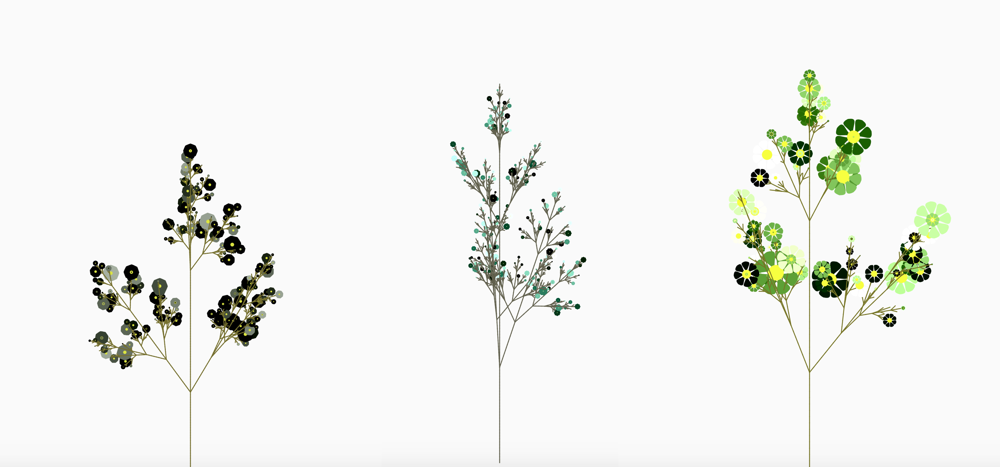
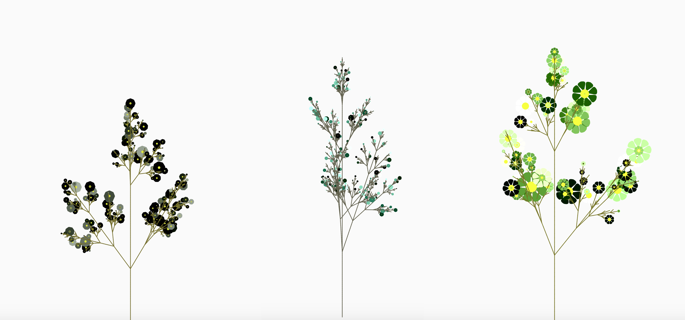

Web Development, Generative Graphics | 2020
Fictional Botanicals
View Demo
Overview
Generating nonexistent flower varieties with code.
In this project, I wrote a program capable of outputting an endless variety of two-dimensional, fictional flowers. This project is ongoing, but produces some interesting results in its current state. Feel free to check out the demo or continue reading to learn more about the process.
Skills & Tools
- Web Development
- Computational Geometry
- p5.js
A Tiny Flower Gallery


 

Background & Moodboard
The unusual onset of Spring 2020.
In Atlanta, a gloomy winter preceded the start of a long period of loneliness and anxiety of social distancing. By the time spring arrived, the bright foliage and accompanying blooms felt especially interesting and beautiful.
During walks around my neighborhood, I collected leaves and flowers to press and hang up on the walls in my apartment. I felt so inspired by them, that I just had to replicate them with code.